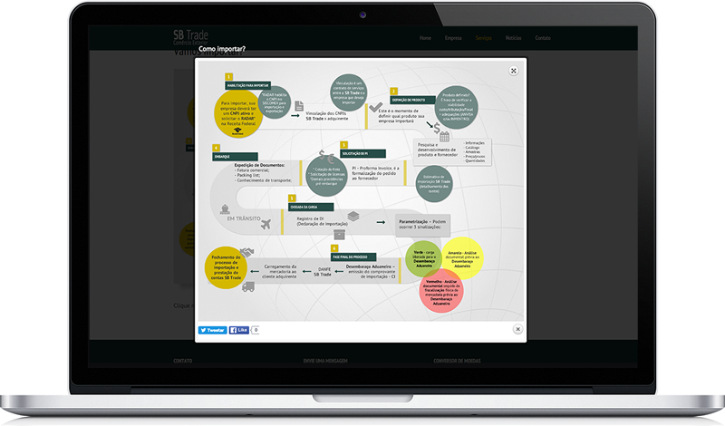
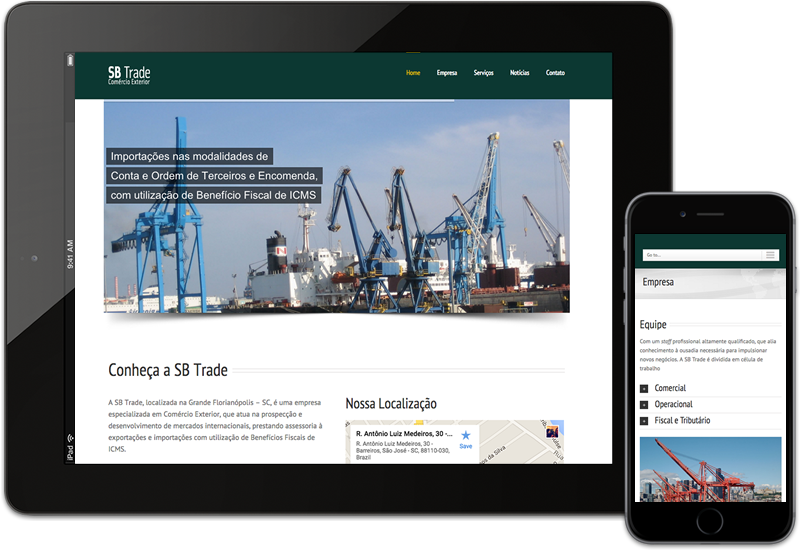

<section class="portfolio-single padding-top-80 padding-bottom-80">
      <div class="container">

        <!-- Images -->
        <div class="row">
          <div class="col-md-8">
            <!-- ITEM -->
            <article class="portfolio-item">
              <div class="portfolio-image">  </div>
            </article>
            <article class="portfolio-item">
              <div class="portfolio-image">  </div>
            </article>
          </div>

          <!-- Content -->
          <div class="col-md-4">
            <div class="port-detail">
              <h4>Identidade Visual, Webstie e Infografia</h4>
              <p>A SB Trade é uma empresa de comércio exterior cuja comunicação está direcionada a divulgar o Brasil e, principalmente, Florianópolis, a fim de mostrar a importância da cidade no setor de importação, em função da sua localização, considerada estratégica para o ramo.</p>
              <p>Junto com os gestores da empresa, ficou definida a participação da designer gráfico nas tomadas de decisão e concepção estratégica dos planos de divulgação, dando autonomia para propor e produzir elementos que contemplassem os objetivos da empresa.</p>
              <p>Neste projeto foi possível trabalhar desde a identidade visual, outdoor, template para e-mail marketing, site em <em>Wordpress</em>, sinalização interna e externa da empresa. </p>

              <ul class="margin-top-50 margin-bottom-50">
                <li> <span>Cliente</span> SB Trade</li>
                <li> <span> Categoria</span> Branding</li>
              </ul>
              <a href="http://sbtrade.com.br" target="_blank" class="btn">Visite o site</a> </div>
          </div>
        </div>
      </div>
    </section>